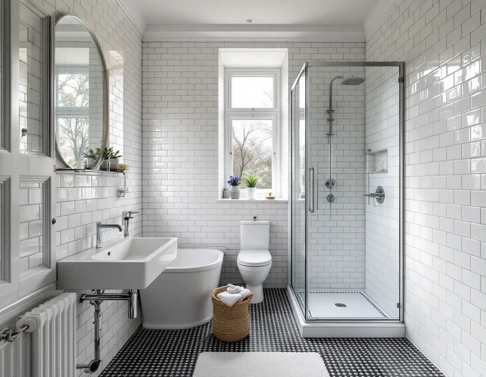
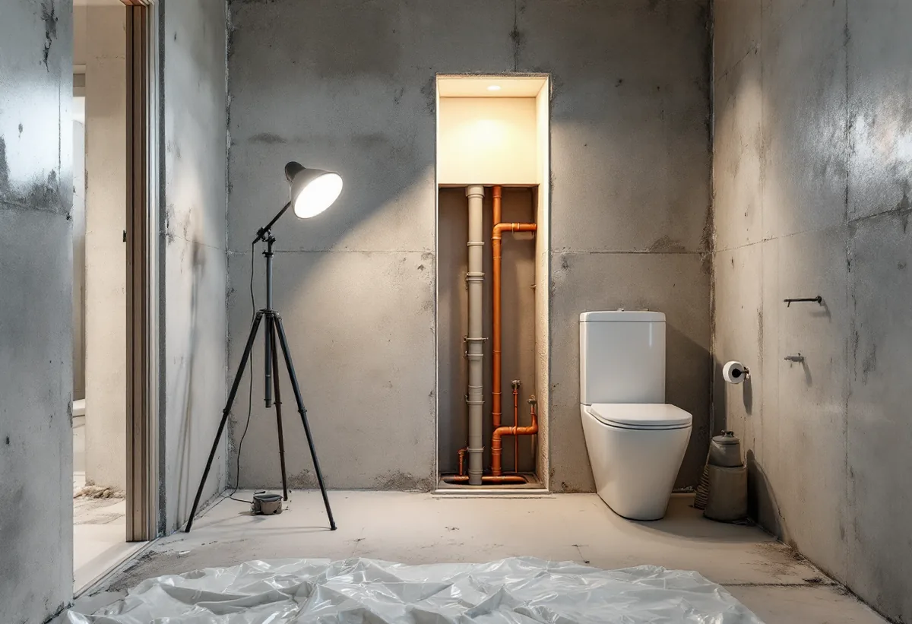

Besök och stadgar
Vi ser badrummet och går igenom vad som är ditt och föreningens ansvar.
Ligger badrummet i en bostadsrätt i Solna börjar renoveringen med föreningen, inte med kaklet. Vi river, bygger upp underlag och tätskikt och samordnar VVS och el, tar fram det underlag styrelsen och staden kan behöva och drar ROT-avdraget direkt på fakturan.

Solna stad räknar upp drygt trettio sammanhängande kulturhistoriskt värdefulla miljöer. Flera är flerbostadshus: Stenstaden i Råsunda, 1950-talsbebyggelsen i Råsunda, Huvudsta och Skytteholm, Hagalundshusen och Stjärnhusen i Bergshamra. Där ligger badrummen i lägenheter, och stammarna, ventilationen och den bärande stommen är gemensamma för hela huset.
Villor och radhus finns också. Staden nämner bland annat Råsunda villastad, villabebyggelsen i norra Råsunda, Råsta egnahem, Alnäs och Stocksundstorp och Solna kyrkby med radhusbebyggelsen. I ett sådant hus är du själv byggherre, men i gengäld syns allt som ändras på utsidan i en miljö som staden vill bevara.

Enligt bostadsrättslagen får du inte utan styrelsens tillstånd göra ingrepp i bärande konstruktion, ändra ledningar för avlopp, värme, gas eller vatten eller ändra ventilationen. Solna stad är ännu tydligare i sin guide för lägenhetsinnehavare: den som bor i en bostadsrätt behöver alltid fastighetsägarens medgivande för byggåtgärder. Staden råder dig också att kräva att leverantören följer kontrollplanen och dokumenterar bygget, och att begära slutbesked när allt är klart.
Den kommunala sidan är en anmälan. Solna stad kräver anmälan för invändiga ändringar som väsentligt påverkar en anläggning för vatten eller avlopp i en byggnad, och du måste vänta på startbesked. Börjar arbetet utan startbesked kan en byggsanktionsavgift tas ut.
Staden anger att ett anmälansärende ska handläggas inom fyra veckor från att det är komplett, och att du inom tre veckor får besked om något saknas. Ett badrum som renoveras med brunn, toalett och dusch kvar på samma plats brukar inte behöva anmälas.
Ska en anmälan göras listar staden bland annat en översiktlig beskrivning av projektet, ett förslag till kontrollplan, plan- och sektionsritning och, om bärande delar berörs, utlåtande från en konstruktör. Ibland behövs en certifierad kontrollansvarig, och vid större åtgärder kallas du till ett tekniskt samråd innan startbeskedet ges.
Ett stambyte är ofta det tillfälle då badrummet i en bostadsrätt görs om, eftersom golv och väggar ändå rivs. GVK:s regler säger att golvbrunnar från före 1990 ska bytas just vid stambyte, liksom vid en påkostad renovering eller efter en stor vattenskada.
Fråga föreningen vad som ingår i deras entreprenad och vad som är ditt. Föreningen ansvarar ofta för stammarna, medan ytskikt, inredning och utrustning är medlemmens – men det avgörs av stadgarna. Den gränsen styr också rotavdraget, och den avgör vad du kan välja själv när badrummet byggs upp igen.
Vill du samtidigt göra badrummet större är det två frågor till. Att riva en vägg i en bostadsrätt kräver enligt Solna stad föreningens godkännande, och är väggen bärande krävs dessutom en anmälan om ändring av bärande konstruktion. Flyttas toalett eller dusch så att avloppet ändras väsentligt kan det också bli en anmälan om vatten och avlopp. Ta därför med hela planen när du söker tillstånd hos styrelsen, inte bara ytskikten.
I villorna är det utsidan som kräver eftertanke. Solna stad skriver att stora delar av staden omfattas av utökad lovplikt, främst på grund av särskilt värdefulla kulturmiljöer och riksintressen, och att bygglovsbefriade åtgärder inte kan utföras i områden som Råsunda villastad, Råsta egnahem och Alnäs och Stocksundstorp. Ett nytt fönster eller en ny frånluftshuv kan alltså behöva lov.
Inne i huset gäller samma regler som i resten av landet. Hur ett tätskikt ska byggas står under badrumsrenovering i Stockholm, och om frånluften ska gå genom taket finns mer om taken i staden hos takläggare i Solna.
Vi ser badrummet och går igenom vad som är ditt och föreningens ansvar.
Du får en beskrivning av arbetet att lämna till styrelsen, och vid behov till staden.
Kostnadsförslaget skiljer på arbete och material och visar vad som ger ROT.
Rummet rivs ner till underlaget, och brunn och anslutningar bedöms.
Fall, våtrumsskivor och tätskikt byggs, och installatörerna kopplar in rör och el.
Ytskikt och porslin på plats; egenkontrollen lämnas till dig och föreningen.
Rotavdraget är 30 procent av arbetskostnaden, högst 50 000 kronor per person och år och högst 75 000 kronor tillsammans med rutavdrag. Vi drar det direkt på fakturan.
I en bostadsrätt ska arbetet enligt Skatteverket göras innanför lägenhetens tak, väggar och golv och gälla sådant du ansvarar för enligt stadgarna. Kakel, klinker, toalett, dusch, handfat och att byta golvbrunn ger avdrag. Stambyten, att byta eller flytta avloppsrör och att flytta golvbrunnen ger det inte.
I en bostadsrätt spelar det in vad föreningen redan gör vid ett stambyte, hur stort rummet är och vilka ytskikt du väljer. I en villa tillkommer underlaget och eventuella ändringar av rör och frånluft. Besöket är gratis och du får ett skriftligt kostnadsförslag.
Tätskikt, golvbrunn, el, VVS och intyg.
Badrumsrenovering i Stockholm →Takbyte, takbesiktning och plåtarbeten.
Takläggare i Solna →Råsunda, Stocksundstorp och Råsta.
Takrenovering i Solna →Ritningar, kontrollplan och slutbesked.
Byggföretag i Solna →Putsade villor och krav på material.
Fasadrenovering i Solna →Fönster från 1950-talet, kitt och fogar.
Fönsterrenovering i Solna →Ta fram och slipa trägolvet under mattan.
Golvslipning i Solna →Plåt i Solnas kulturmiljöer.
Plåtslagare i Solna →Tapet efter husets ålder och underlag.
Tapetsering i Solna →